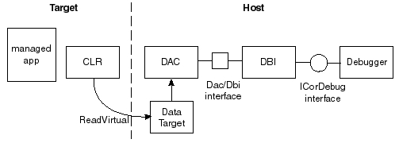

Data Access Component (DAC) Notes
Date: 2007
Debugging managed code requires special knowledge of managed objects and constructs. For example, objects have various kinds of header information in addition to the data itself. Objects may move in memory as the garbage collector does its work. Getting type information may require help from the loader. Retrieving the correct version of a function that has undergone an edit-and-continue or getting information for a function emitted through reflection requires the debugger to be aware of EnC version numbers and metadata. The debugger must be able to distinguish AppDomains and assemblies. The code in the VM directory embodies the necessary knowledge of these managed constructs. This essentially means that APIs to retrieve information about managed code and data must run some of the same algorithms that the execution engine itself runs.
Debuggers can operate either in-process or out-of-process. A debugger that runs in-process requires a live data target (the debuggee). In this case, the runtime has been loaded and the target is running. A helper thread in the debuggee runs code from the execution engine to compute the information the debugger needs. Because the helper thread runs in the target process, it has ready access to the target's address space and the runtime code. All the computation occurs in the target process. This is a simple way to get the information the debugger needs to be able to represent managed constructs in a meaningful way. Nevertheless, an in-process debugger has certain limitations. For example, if the debuggee is not currently running (as is the case when the debuggee is a dump file), the runtime is not loaded (and may not even be available on the machine). In this case, the debugger has no way to execute runtime code to get the information it needs.
Historically, the CLR debugger has operated in process. A debugger extension, SOS (Son of Strike) or Strike (in the early CLR days) can be used to inspect managed code. Starting with .NET Framework 4, the debugger runs out-of-process. The CLR debugger APIs provide much of the functionality of SOS along with other functionality that SOS does not provide. Both SOS and the CLR debugging APIs use the Data Access Component (DAC) to implement out-of-process debugging. The DAC is conceptually a subset of the runtime's execution engine code that runs out-of-process. This means that it can operate on a dump file, even on a machine that has no runtime installed. Its implementation consists mainly of a set of macros and templates, combined with conditional compilation of the execution engine's code. When the runtime is built, both clr.dll and mscordacwks.dll. For CoreCLR builds, the binaries are slightly different: coreclr.dll and msdaccore.dll. The file names also differ when built for other operating systems, like OS X. To inspect the target, the DAC can read its memory to get the inputs for the VM code in mscordacwks. It can then run the appropriate functions in the host to compute the information needed about a managed construct and finally return the results to the debugger.
Notice that the DAC reads the memory of the target process. It's important to realize that the debugger and the debuggee are separate processes with separate address spaces. Thus it is important to make a clear distinction between target memory and host memory. Using a target address in code running in the host process would have completely unpredictable and generally incorrect results. When using the DAC to retrieve memory from the target, it is important to be very careful to use addresses from the correct address space. Furthermore, sometimes the target addresses are strictly used as data. In this case, it would be just as incorrect to use a host address. For example, to display information about a managed function, we might want to list its starting address and size. Here, it is important to provide the target address. When writing code in the VM that the DAC will run, one needs to correctly choose when to use host and target addresses.
The DAC infrastructure (the macros and templates that control how host or target memory is accessed) supplies certain conventions that distinguish which pointers are host addresses and which are target addresses. When a function is DACized (i.e., use the DAC infrastructure to make the function work out of process), host pointers of type T are declared to be of type T *. Target pointers are of type PTR_T. Remember though, that the concept of host versus target is only meaningful for the DAC. In a non-DAC build, we have only a single address space. The host and the target are the same: the CLR. If we declare a local variable of either type T * _or of type PTR_T in a VM function, it will be a "host pointer". When we are executing code in clr.dll (coreclr.dll), there is absolutely no difference between a local variable of type T * and a local variable of type PTR_T. If we execute the function compiled into mscordacwks.dll (msdaccore.dll) from the same source, the variable declared to be of type T * will be a true host pointer, with the debugger as the host. If you think about it, this is obvious. Nevertheless it can become confusing when we start passing these pointers to other VM functions. When we are DACizing a function (i.e., changing T * to PTR_T, as appropriate), we sometimes need to trace a pointer back to its point of origin to determine whether it should be a host or target type.
When one has no understanding of the DAC, it's easy to find the use of the DAC infrastructure annoying. The TADDRs and PTR_this and dac_casts, etc. seem to clutter the code and make it harder to understand. With just a little work, though, you'll find that these are not really difficult to learn. Keeping host and target addresses explicitly different is really a form of strong typing. The more diligent we are, the easier it becomes to ensure our code is correct.
Because the DAC potentially operates on a dump, the part of the VM sources we build in mscordacwks.dll (msdaccore.dll) must be non-invasive. Specifically, we usually don't want to do anything that would cause writing to the target's address space, nor can we execute any code that might cause an immediate garbage collection. (If we can defer the GC, it may be possible to allocate.) Note that the host state is always mutated (temporaries, stack or local heap values); it is only mutating the target space that is problematic. To enforce this, we do two things: code factoring and conditional compilation. In an ideal world, we would factor the VM code so that we would strictly isolate invasive actions in functions that are separate from non-invasive functions.
Unfortunately, we have a large code base, most of which we wrote without ever thinking about the DAC at all. We have a significant number of functions with "find or create" semantics and many other functions that have some parts that just do inspection and other parts that write to the target. Sometimes we control this with a flag passed into the function. This is common in loader code, for example. To avoid having to complete the immense job of refactoring all the VM code before we can use the DAC, we have a second method to prevent executing invasive code from out of process. We have a defined pre-processor constant, DACCESS_COMPILE that we use to control what parts of the code we compile into the DAC. We would like to use the DACCESS_COMPILE constant as little as we can, so when we DACize a new code path, we prefer to refactor whenever possible. Thus, a function that has "find or create" semantics should become two functions: one that tries to find the information and a wrapper that calls this and creates if the find fails. That way, the DAC code path can call the find function directly and avoid the creation.
How does the DAC work?
As discussed, the DAC works by marshaling the data it needs and running code in the mscordacwks.dll (msdaccore.dll) module. It marshals data by reading from the target address space to get a target value, and then storing it in the host address space where the functions in mscordacwks can operate on it. This happens only on demand, so if the mscordacwks functions never need a target value, the DAC will not marshal it.
Marshaling Principles
The DAC maintains a cache of data that it reads. This avoids the overhead of reading the same values repeatedly. Of course, if the target is live, the values will potentially change. We can only assume the cached values are valid as long as the debuggee remains stopped. Once we allow the target to continue execution, we must flush the DAC cache. The DAC will retrieve the values again when the debugger stops the target for further inspection. The entries in the DAC cache are of type DAC_INSTANCE. This contains (among other data) the target address, the size of the data and space for the marshaled data itself. When the DAC marshals data, it returns the address of the marshaled data part of this entry as the host address.
When the DAC reads a value from the target, it marshals the value as a chunk of bytes of a given size (determined by its type). By keeping the target address as a field in the cache entries, it maintains a mapping between the target address and the host address (the address in the cache). Between any stop and continue of a debugger session, the DAC will marshal each value requested only once, as long as subsequent accesses use the same type. (If we reference the target address by two different types, the size may be different, so the DAC will create a new cache entry for the new type). If the value is already in the cache, the DAC will be able to look it up by its target address. That means we can correctly compare two host pointers for (in)equality as long as we have accessed both pointers using the same type. This identity of pointers does not hold across type conversions however. Furthermore, we have no guarantee that values marshaled separately will maintain the same spatial relationship in the cache that they do in the target, so it is incorrect to compare two host pointers for less-than or greater-than relationships. Object layout must be identical in host and target, so we can access fields in an object in the cache using the same offsets we use in the target. Remember that any pointer fields in a marshaled object will be target addresses (generally declared as data members of a PTR type). If we need the values at those addresses, the DAC must marshal them to the host before dereferencing them.
Because we build this dll from the same sources that we use to build mscorwks.dll (coreclr.dll), the mscordacwks.dll (msdaccore.dll) build that the debugger uses must match the mscorwks build exactly. You can see that this is obviously true if you consider that between builds we might add or remove a field from a type we use. The size for the object in mscorwks would then be different from the size in mscordacwks and the DAC could not marshal the object correctly. This has a ramification that's obvious when you think about it, but easy to overlook. We cannot have fields in objects that exist only in DAC builds or only in non-DAC builds. Thus, a declaration such as the following would lead to incorrect behavior.
class Foo
{
...
int nCount;
// DON'T DO THIS!! Object layout must match in DAC builds
#ifndef DACCESS_COMPILE
DWORD dwFlags;
#endif
PTR_Bar pBar;
...
};
Marshaling Specifics
DAC marshaling works through a collection of typedefs, macros and templated types that generally have one meaning in DAC builds and a different meaning in non-DAC builds. You can find these declarations in src\inc\daccess.h. You will also find a long comment at the beginning of this file that explains the details necessary to write code that uses the DAC.
An example may be helpful in understanding how marshaling works. The common debugging scenario is represented in the following block diagram:

The debugger in this figure could be Visual Studio, MDbg, WinDbg, etc. The debugger interfaces with the CLR debugger interface (DBI) APIs to get the information it needs. Information that must come from the target goes through the DAC. The debugger implements the data target, which is responsible for implementing a ReadVirtual function to read memory in the target. The dotted line in the diagram represents the process boundary.
Suppose the debugger needs to display the starting address of an ngen'ed method in the managed application that it has gotten from the managed stack. We will assume that the debugger has already gotten an instance of ICorDebugFunction back from the DBI. It will begin by calling the DBI API ICorDebugFunction::GetNativeCode. This calls into the DAC through the DAC/DBI interface function GetNativeCodeInfo, passing in the domain file and metadata token for the function. The following code fragment is a simplification of the actual function, but it illustrates marshaling without introducing extraneous details.
void DacDbiInterfaceImpl::GetNativeCodeInfo(TADDR taddrDomainFile,
mdToken functionToken,
NativeCodeFunctionData * pCodeInfo)
{
...
DomainFile * pDomainFile = dac_cast<PTR_DomainFile>(taddrDomainFile);
Module * pModule = pDomainFile->GetCurrentModule();
MethodDesc* pMethodDesc = pModule->LookupMethodDef (functionToken);
pCodeInfo->pNativeCodeMethodDescToken = pMethodDesc;
// if we are loading a module and trying to bind a previously set breakpoint, we may not have
// a method desc yet, so check for that situation
if(pMethodDesc != NULL)
{
pCodeInfo->startAddress = pMethodDesc->GetNativeCode();
...
}
}
The first step is to get the module in which the managed function resides. The taddrDomainFile parameter we pass in represents a target address, but we will need to be able to dereference it here. This means we need the DAC to marshal the value. The dac_cast operator will construct a new instance of PTR_DomainFile with a target address equal to the value of domainFileTaddr. When we assign this to pDomainFile, we have an implicit conversion to the host pointer type. This conversion operator is a member of the PTR type and this is where the marshaling occurs. The DAC first searches its cache for the target address. If it doesn't find it, it reads the data from the target for the marshaled DomainFile instance and copies it to the cache. Finally, it returns the host address of the marshaled value.
Now we can call GetCurrentModule on this host instance of the DomainFile. This function is a simple accessor that returns DomainFile::m_pModule. Notice that it returns a Module *, which will be a host address. The value of m_pModule is a target address (the DAC will have copied the DomainFile instance as raw bytes). The type for the field is PTR_Module, however, so when the function returns it, the DAC will automatically marshal it as part of the conversion to Module *. That means the return value is a host address. Now we have the correct module and a method token, so we have all the information we need to get the MethodDesc.
Module * DomainFile::GetCurrentModule()
{
LEAF_CONTRACT;
SUPPORTS_DAC;
return m_pModule;
}
In this simplified version of the code, we are assuming that the method token is a method definition. The next step, then, is to call the LookupMethodDef function on the Module instance.
inline MethodDesc *Module::LookupMethodDef(mdMethodDef token)
{
WRAPPER_CONTRACT;
SUPPORTS_DAC;
...
return dac_cast<PTR_MethodDesc>(GetFromRidMap(&m_MethodDefToDescMap, RidFromToken(token)));
}
This uses the RidMap to lookup the MethodDesc. If you look at the definition for this function, you will see that it returns a TADDR:
TADDR GetFromRidMap(LookupMap *pMap, DWORD rid)
{
...
TADDR result = pMap->pTable[rid];
...
return result;
}
This represents a target address, but it's not really a pointer; it's simply a number (although it represents an address). The problem is that LookupMethodDef needs to return the address of a MethodDesc that we can dereference. To accomplish this, the function uses a dac_cast to PTR_MethodDesc to convert the TADDR to a PTR_MethodDesc. You can think of this as the target address space form of a cast from void * to MethodDesc *. In fact, this code would be slightly cleander if GetFromRidMap returned a PTR_VOID (with pointer semantics) instead of a TADDR (with integer semantics). Again, the type conversion implicit in the return statement ensures that the DAC marshals the object (if necessary) and returns the host address of the MethodDesc in the DAC cache.
The assignment statement in GetFromRidMap indexes an array to get a particular value. The pMap parameter is the address of a structure field from the MethodDesc. As such, the DAC will have copied the entire field into the cache when it marshaled the MethodDesc instance. Thus, pMap, which is the address of this struct, is a host pointer. Dereferencing it does not involve the DAC at all. The pTable field, however, is a PTR_TADDR. What this tells us is that pTable is an array of target addresses, but its type indicates that it is a marshaled type. This means that pTable will be a target address as well. We dereference it with the overloaded indexing operator for the PTR type. This will get the target address of the array and compute the target address of the element we want. The last step of indexing marshals the array element back to a host instance in the DAC cache and returns its value. We assign the element (a TADDR) to the local variable result and return it.
Finally, to get the code address, the DAC/DBI interface function will call MethodDesc::GetNativeCode. This function returns a value of type PCODE. This type is a target address, but one that we cannot dereference (it is just an alias of TADDR) and one that we use specifically to specify a code address. We store this value on the ICorDebugFunction instance and return it to the debugger.
PTR Types
Because the DAC marshals values from the target address space to the host address space, understanding how the DAC handles target pointers is fundamental. We collectively refer to the fundamental types used for marshaling these as "PTR types." You will see that daccess.h defines two classes: __TPtrBase, which has several derived types, and __GlobalPtr. We don't use these types directly; we use them only indirectly through a number of macros. Each of these contains a single data member to give us the target address of the value. For __TPtrBase, this is a full address. For __GlobalPtr, it is a relative address, referenced from a DAC global base location. The "T" in __TPtrBase stands for "target". As you can guess, we use types derived from __TPtrBase for pointers that are data members or locals and we use __GlobalPtr for globals and statics.
In practice, we use these types only through macros. The introductory comment in daccess.h has examples of the use of all of these. What is interesting about these macros is that they will expand to declare instantiated types from these marshaling templates in DAC builds, but are no-ops in non-DAC builds. For example, the following definition declares PTR_MethodTable as a type to represent method table pointers (note that the convention is to name these types with a prefix of PTR_):
typedef DPTR(class MethodTable) PTR_MethodTable;
In a DAC build, the DPTR macro will expand to declare a __DPtr<MethodTable> type named PTR_MethodTable. In a non-DAC build, the macro simply declares PTR_MethodTable to be MethodTable *. This implies that the DAC functionality does not result in any behavior change or performance degradation in non-DAC builds.
Even better, in a DAC build, the DAC will automatically marshal variables, data members, or return values declared to be of type PTR_MethodTable, as we saw in the example in the last section. The marshaling is completely transparent. The __DPtr type has overloaded operator functions to redefine pointer dereferencing and array indexing, and a conversion operator to cast to the host pointer type. These operations determine whether the requested value is already in the cache, from whence the operators will return them immediately, or whether it is necessary to read from the target and load the value into the cache before returning it. If you are interested in understanding the details, the function responsible for these cache operations is DacInstantiateTypeByAddressHelper.
PTR types defined with DPTR are the most common in the runtime, but we also have PTR types for global and static pointers, restricted-use arrays, pointers to variable-sized objects, and pointers to classes with virtual functions that we may need to call from mscordacwks.dll (msdaccore.dll). Most of these are rare and you can refer to daccess.h to learn more about them if you need them.
The GPTR and VPTR macros are common enough to warrant special mention here. Both the way we use these and their external behavior is quite similar to DPTRs. Again, marshaling is automatic and transparent. The VPTR macro declares a marshaled pointer type for a class with virtual functions. This special macro is necessary because the virtual function table is essentially an implicit extra field. The DAC has to marshal this separately, since the function addresses are all target addresses that the DAC must convert to host addresses. Treating these classes in this way means that the DAC automatically instantiates the correct implementation class, making casts between base and derived types unnecessary. When you declare a VPTR type, you must also list it in vptr_list.h. __GlobalPtr types provide base functionality to marshal both global variables and static data members through the GPTR, GVAL, SPTR and SVAL macros. The implementation of global variables is almost identical to that of static fields (both use the __GlobalPtr class) and require the addition of an entry in dacvars.h. Global functions used in the DAC do not require macros at the implementation site, but they must be declared in the gfunc_list.h header to have their addresses be automatically available to the DAC. The comments in daccess.h and dacvars.h provide more details about declaring these types.
Global and static values and pointers are interesting because they form the entry points to the target address space (all other uses of the DAC require you to have a target address already). Many of the globals in the runtime are already DACized. It occasionally becomes necessary to make a previously un-DACized (or a newly introduced) global available to the DAC. By using the appropriate macros and dacvars.h entry, you enable the dac table machinery (in dactable.cpp) to save the address of the global into a table that is exported from coreclr.dll. The DAC uses this table at run-time to determine where to look in the target address space when the code accesses a global.
VAL Types
In addition to pointer types, the DAC must also marshal static and global values (as opposed to values referenced by static or global pointers). For this we have a collection of macros ?VAL_*. We use GVAL_* for global values, and SVAL_* for static values. The comment in the daccess.h file has a table showing how to use the various forms of these and includes instructions for declaring global and static values (and global and static pointers) that we will use in DACized code.
Pure Addresses
The TADDR and PCODE types we introduced in the example of DAC operation are pure target addresses. These are actually integer types, rather than pointers. This prevents code in the host from incorrectly dereferencing them. The DAC does not treat them as pointers either. Specifically, because we have no type or size information no dereferencing or marshalling can occur. We use these primarily in two situations: when we are treating a target address as pure data and when we need to do pointer arithmetic with target addresses (although we can also do pointer arithmetic with PTR types). Of course, because TADDRs have no type information for the target locations they specify, when we perform address arithmetic, we need to factor in the size explicitly.
We also have one special class of PTRs that don't involve marshaling: PTR_VOID and PTR_CVOID. These are the target equivalents of void * and const void *, respectively. Because TADDRs are simply numbers, they don't have pointer semantics, which means that if we DACize code by converting void * to TADDR (as was often the case in the past), we often need extra casts and other changes, even in code that does not compile for the DAC. Using PTR_VOID makes it easier and cleaner to DACize code that uses void * by preserving the semantics expected for void *. If we DACize a function that uses PTR_VOID or PTR_CVOID, we can't directly marshal data from these addresses, since we have no idea how much data we would need to read. This means we can't dereference them (or even do pointer arithmetic), but this is identical to the semantics of void *. As is the case for void *, we generally cast them to a more specific PTR type when we need to use them. We also have a PTR_BYTE type, which is a standard marshaled target pointer (that supports pointer arithmetic, etc.). In general, when we DACize code, void * becomes PTR_VOID and BYTE * becomes PTR_BYTE, just as you would expect. daccess.h has explanatory comments that provide more details about the use and semantics of the PTR_VOID type.
Occasionally, legacy code stores a target address in a host pointer type such as void *. This is always a bug and makes it extremely difficult to reason about the code. It will also break when we support cross-platform, where the pointer types are different sizes. In DAC builds, the void * type is a host pointer which should never contain a target address. Using PTR_VOID instead allows us to indicate that a void pointer type is a target address. We are trying to eliminate all such uses, but some are quite pervasive in the code and will take a while to eliminate entirely.
Conversions
In earlier CLR versions, we used C-style type casting, macros, and constructors to cast between types. For example, in MethodIterator::Next, we have the following:
if (methodCold)
{
PTR_CORCOMPILE_METHOD_COLD_HEADER methodColdHeader
= PTR_CORCOMPILE_METHOD_COLD_HEADER((TADDR)methodCold);
if (((TADDR)methodCode) == PTR_TO_TADDR(methodColdHeader->hotHeader))
{
// Matched the cold code
m_pCMH = PTR_CORCOMPILE_METHOD_COLD_HEADER((TADDR)methodCold);
...
Both methodCold and methodCode are declared as BYTE *, but in fact hold target addresses. In line 4, methodCold is casted to a TADDR and used as the argument to the constructor for PTR_CORCOMPILE_METHOD_COLD_HEADER. At this point, methodColdHeader is explicitly a target address. In line 6, there is another C-style cast for methodCode. The hotHeader field of methodColdHeader is of type PTR_CORCOMPILE_METHOD_HEADER. The macro PTR_TO_TADDR extracts the raw target address from this PTR type and assigns it to methodCode. Finally, in line 9, another instance of type PTR_CORCOMPILE_METHOD_COLD_HEADER is constructed. Again, methodCold is casted to TADDR to pass to this constructor.
If this code seems overly complex and confusing to you, that's good. In fact it is. Worse, it provides no protection for the separation of host and target addresses. From the declarations of methodCold and methodCode, there is no particular reason to interpret them as target addresses at all. If these pointers were dereferenced in DAC builds as if they really were host pointers, the process would probably AV. This snippet demonstrates that any arbitrary pointer type (as opposed to a PTR type) can be casted to a TADDR. Given that these two variables always hold target addresses, they should be of type PTR_BYTE, rather than BYTE *.
There is also a disciplined means to cast between different PTR types: dac_cast. The dac_cast operator is the DAC-aware version of the C++ static_cast operator (which the CLR coding conventions stipulate instead of C-style casts when casting pointer types). The dac_cast operator will do any of the following things:
- Create a
PTRtype from aTADDR - Convert one
PTRtype to another - Create a
PTRfrom a host instance previously marshaled to the DAC cache - Extract the
TADDRfrom aPTRtype - Get a
TADDRfrom a host instance previously marshaled to the DAC cache
Now, assuming both methodCold and methodCode are declared to be of type PTR_BYTE, the code above can be rewritten as follows.
if (methodCold)
{
PTR_CORCOMPILE_METHOD_COLD_HEADER methodColdHeader
= dac_cast<PTR_CORCOMPILE_METHOD_COLD_HEADER>(methodCold);
if (methodCode == methodColdHeader->hotHeader)
{
// Matched the cold code
m_pCMH = methodColdHeader;
You might argue that this code still seems complex and confusing, but at least we have significantly reduced the number of casts and constructors. We have also used constructs that maintain the separation between host and target pointers, so we have made the code safer. In particular, dac_cast will often generate compiler or run-time errors if we try to do the wrong thing. In general, dac_cast should be used for conversions.
DACizing
When do you need to DACize?
Whenever you add a new feature, you will need to consider its debuggability needs and DACize the code to support your feature. You must also ensure that any other changes, such as bug fixes or code clean-up, conform to the DAC rules when necessary. Otherwise, the changes will break the debugger or SOS. If you are simply modifying existing code (as opposed to implementing a new feature), you will generally be able to determine that you need to worry about the DAC when a function you modify includes a SUPPORTS_DAC contract. This contract has a few variants such as SUPPORTS_DAC_WRAPPER and LEAF_DAC_CONTRACT. You can find comments explaining the differences in contract.h. If you see a number of DAC-specific types in the function, you should assume the code will run in DAC builds.
DACizing ensures that code in the engine will work correctly with the DAC. It is important to use the DAC correctly to marshal values from the target to the host. Target addresses used incorrectly from the host (or vice versa) may reference unmapped addresses. If addresses are mapped, the values will be completely unrelated to the values expected. As a result, DACizing mostly involves ensuring that we use PTR types for all values that the DAC needs to marshal. Another major task is to ensure that we do not allow invasive code to execute in DAC builds. In practice, this means that we must sometimes refactor code or add DACCESS_COMPILE preprocessor directives. We also want to be sure that we add the appropriate SUPPORTS_DAC contract. The use of this contract signals to developers that the function works with the DAC. This is important for two reasons:
- If we later call it from some other
SUPPORTS_DACfunction, we know that it is DAC-safe and we don't need to worry about DACizing it. - If we make modifications to the function, we need to make sure that they are DAC-safe. If we add a call to another function from this one, we also need to ensure that it is DAC-safe or that we only make the call in non-DAC builds.